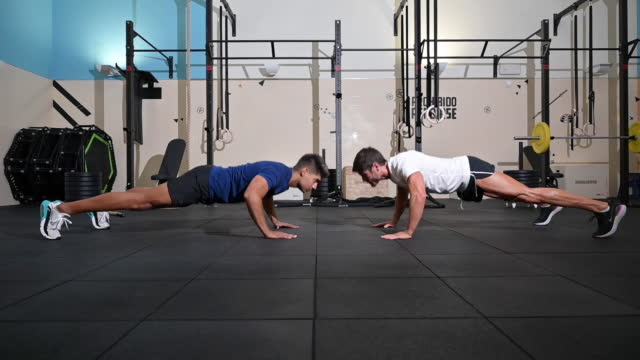

Push-ups are a classic exercise that can help you build upper body strength, increase muscular endurance, and improve overall fitness. Among the various variations, the challenge of performing 30 consecutive push-ups is a popular fitness goal for many individuals. Whether you're a beginner or someone looking to push your limits, this blog will guide you through the process of mastering the 30 push-up challenge.
Before attempting the 30 push-up challenge, it's crucial to understand and maintain proper form. Begin by assuming a high plank position with your hands slightly wider than shoulder-width apart, arms fully extended, and toes supporting your body weight. Keep your core engaged, maintain a straight line from your head to your heels, and avoid sagging or arching your back.
If you're new to push-ups or not yet able to perform 30 reps, don't be discouraged. Start with modified push-ups on your knees or by leaning against a sturdy elevated surface, such as a bench or countertop. This modification reduces the amount of body weight you're pushing, allowing you to build strength gradually. Set achievable goals and increase the number of push-ups you do each session. For example, begin with three sets of ten push-ups and gradually add more reps or sets as you feel comfortable and stronger.
To improve your push-up performance, it's essential to strengthen the muscles that assist in the movement. Exercises such as chest presses, shoulder presses, tricep dips, and planks can help build the necessary upper body strength and stability. Incorporate these exercises into your regular workout routine to enhance your push-up abilities.
As you progress towards the 30 push-up mark, focus on refining your technique. Pay attention to maintaining a straight body line throughout the movement, lowering your chest to elbow height, and extending your arms fully at the top. Engage your core and avoid letting your hips sag or rise during the exercise.
Once you can comfortably perform 15-20 push-ups, it's time to up the challenge. Explore different variations to increase the difficulty level, such as diamond push-ups (hands close together in a diamond shape), decline push-ups (feet elevated), or plyometric push-ups (explosive push-ups with a clap in mid-air). These variations engage different muscle groups and provide a more challenging workout.
Consistency is key when working towards the 30 push-up challenge. Aim to practice push-ups at least three times a week, allowing your muscles to recover between sessions. Rest and recovery are crucial for muscle growth and injury prevention.
Building strength and endurance takes time, effort, and mental resilience. Stay motivated by setting specific goals, tracking your progress, and celebrating milestones along the way. Remember that progress may not always be linear, but every small step brings you closer to your target.
The 30 push-up challenge is an excellent goal to strive for, irrespective of your current fitness level. By following the steps outlined in this blog, focusing on proper form, gradual progression, and consistent training, you'll be on your way to mastering 30 consecutive push-ups. Embrace the journey, stay committed, and enjoy the benefits of improved strength, endurance, and overall fitness. Remember, it's not just about the destination; it's about the growth and transformation you experience along the way.